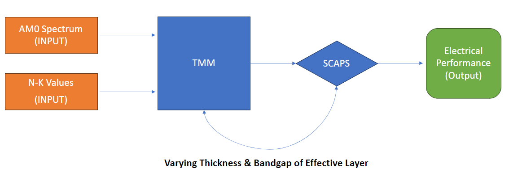

“An expert is a man who has made all the mistakes which can be made in a very narrow field.”— Niels Bohr
Designer Materials and Devices · Aalto University
Housed in Aalto University's Department of Electronics and Nanoengineering, the group
focuses on metamaterials and metasurfaces. I joined as a visiting research assistant in summer 2024.
Permittivity Measurements of 3D Printing Materials
Visiting Research Assistant · Jul – Sep 2024 · supervised by Prof. Viktar Asadchy
This project investigated the dielectric permittivity of materials commonly used in 3D printing.
Test samples were designed in Siemens NX and fabricated by 3D printing, and their S-parameters were
measured over the GHz range using a waveguide set-up. Permittivity was then extracted by fitting the
measured data with full-wave simulations in Ansys HFSS.
The APP group, led by Prof. Selçuk Yerci,
focuses on solar cell technologies. I joined in 2022, first as an undergraduate trainee and then as an undergraduate researcher, and contributed to the
projects below.
Optimization of Perovskite Solar Cells for Indoor Applications
Poster, 21st National Optics, Electro-Optics and Photonics Workshop, Koç University · first author
Perovskites are gaining interest for indoor use because their absorption aligns well with indoor
illumination. We performed an opto-electrical, simulation-based optimization of perovskite thickness and
band-gap under warm, natural and cold LED spectra: the Transfer Matrix Method produced carrier generation
profiles, which were then used in SCAPS to obtain electrical performance.
Simple Determination of Optical Constants of Organic Blends
Poster, 21st National Optics, Electro-Optics and Photonics Workshop, Koç University · third author
Organic solar cells use donor–acceptor blends in the active layer, and measuring their optical constants
by fabrication and ellipsometry is costly. We introduced a principle-of-mixtures method that computes the
optical constants for any blend ratio from those of the individual materials, removing the need for new
samples and ellipsometry at every ratio.
Simulation Analysis of Perovskite Performance in Space
Simulation study
Perovskite solar cells are efficient and promising, but their behaviour in the harsh space environment is
still poorly understood. I ran SCAPS simulations of different perovskite materials under the AM0 spectrum
to study their performance.

Simulation methodology.
AM0 spectrumSCAPS
ReBTEPP — Reflection Based Thickness Estimator Program Package
MATLAB software
A MATLAB package that estimates nanometre-scale film thickness: theoretical reflection is computed from
the material's refractive index for many thicknesses and compared with measured reflection; the thickness
with minimum error gives a close estimate.